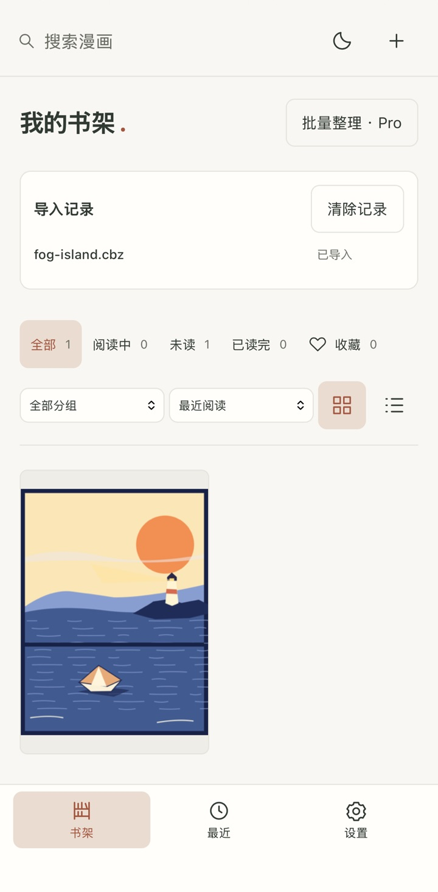
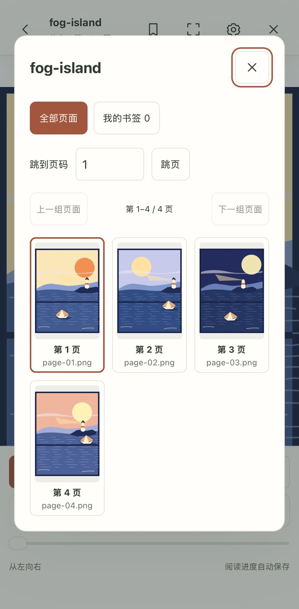

Local comic reader · iPhone / iPad
Quiet pages.
Whole volumes.
LumiComic only opens your own comic files. Import ZIP, CBZ, PDF or image-based EPUB comics and your series are sorted by volume and chapter. Offline, no account, no ads: your comics stay on your device.
- Offline
- No account
- No data collected
- One-time purchase

Let the pages take the stage
Sorted on import
Pick several files from Files at once. Series, volumes and chapters are detected and put in natural order. Duplicates are skipped and originals are never modified.
Single, Spread, Scroll
Switch modes any time, read right to left, and manga direction tags inside the archive are honoured.
Picks up where you left off
Progress saves automatically. Bookmarks, contents and thumbnails for quick jumps; finish a volume and open the next.
Backgrounds that stay out of the way
Auto, white or black reader backgrounds, with brightness control and full-screen reading.
Fully offline
The app makes no network requests. No account, ads, analytics or third-party SDKs.
Buy once, no subscription
Reading is free forever. Pro is a single purchase; later Pro features are included, with Family Sharing.
A closer look



The comic in these screenshots, Letters from Fog Island, is an original sample. LumiComic does not provide any comic content.
Free is plenty. Pro is smoother.
Free forever
- Import and read every supported format
- Single, Spread and Scroll, right-to-left reading
- Series, groups, favourites and search
- Progress, bookmarks, contents and thumbnails
- Auto / white / black backgrounds, Chinese and English
LumiComic Pro · one-time purchase
- Auto-crop: trims white and black margins from scans
- App Lock and hidden series with Face ID or passcode
- Read in place: open originals in Files without copying
- Batch organising: group, mark read or delete in one go
- Auto page turning and smooth scroll
- Image filters: contrast, sharpening and warmth
Features that are free at public launch will never become paid or limited.
Where to read
Available
iPhone and iPad
Search for LumiComic on the App Store or use the button below. Requires iOS 15 or later; iPad supports two-page spreads in landscape.
Download on the App StoreFree · iOS 15 or laterTest build
Android
The first offline test build imports and reads ZIP/CBZ, PDF and image EPUB, with no network permission. Requires Android 7.0 or later. Pro is not yet available on Android.
Download Android test buildAPK · 1.0.0When installing, Android asks whether your browser or file manager may install unknown apps; allow it to continue. The test build keeps your library on this device only and uninstalling removes it, so keep your original files.
Support and information
Support →
Answers about importing, ordering, reading modes, garbled names, storage and purchases.
Privacy Policy →
Your comics stay on your device. We do not collect, upload or sell any personal information.
Terms of Use →
LumiComic only reads your own files. Core features are free forever; Pro is a one-time purchase.
Contact the developer · support@surveykit.cc